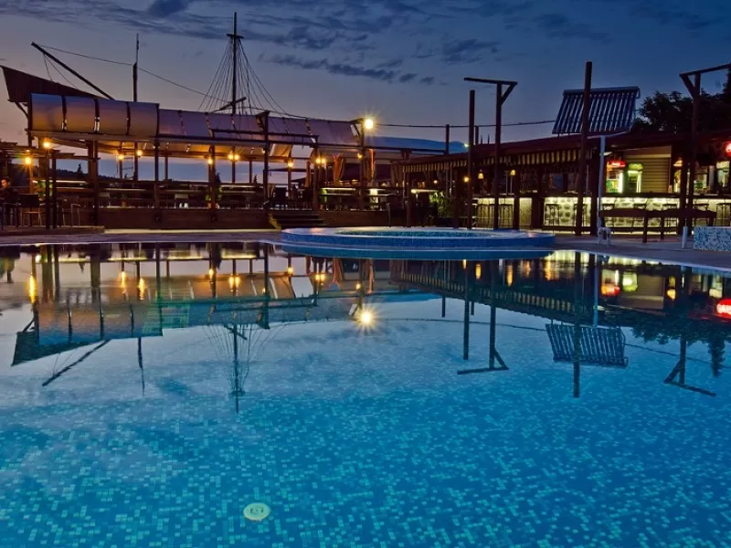
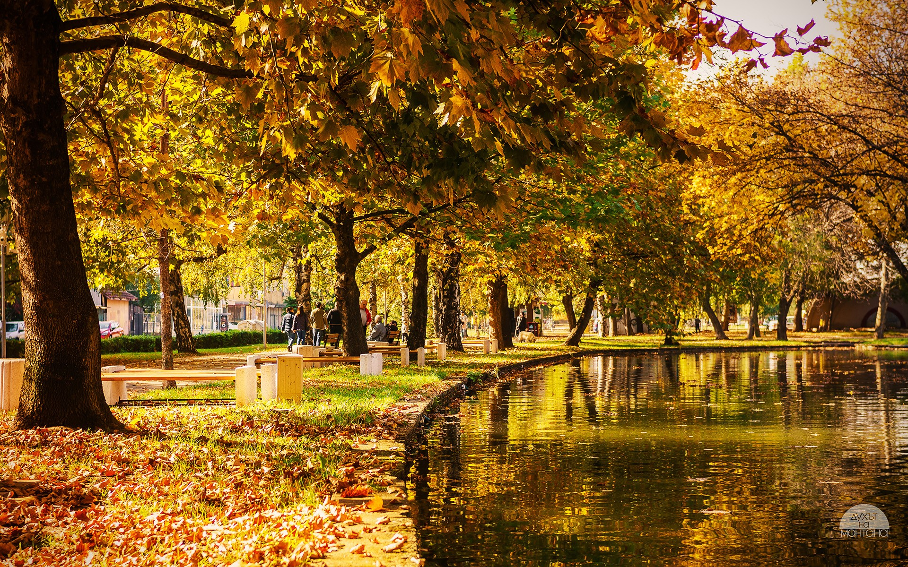

Visitor Information
As Montana is a small city, it may seem like there isn't much to do. Some would argue, however, that it has just the right amount of activity opportunitie. The city will not overwhelm you, but it also will not bore you.
|  |
Pool
If visiting in the summer, the best place to spend your time - THE POOL! The pool is where you will find families, students, elderly, just about everyone after 5pm. It is a great place to relax and cool off. The pool is located in a bit outside the city center, and is surrounded by nature. A great place to take a walk, or have a picnic. There is also a cafe and a restaurant, so you can grab a bite to eat or a drink. The pool is open from June to September, and is very affordable. The pool is also a great place to meet locals, and practice your Bulgarian.
|
|
Parks
Montana has several parks you can take a walk in. Each park has a playground where kids can play and interact, with benches where the parents can sit and relax. There are also cafes just across the playgrounds where you can grab a coffee or a snack. The parks are a great place to meet locals, and practice your Bulgarian (again, never enough). The parks are also a great place to take a walk, and enjoy the nature.
|
 |

|
Restaurants
To finish off the day, you can take a walk around the city center and choose a restaurant to enjoy. The city center is small, but has a few restaurants and cafes to choose from. You can close your eyes, choose blindly, and will still have an extremely tasty meal. Most restaurants offer the same menus, although you might find ones that specialise in pizzas, or chinese. I guarantee, there will be something for you to enjoy.
|
{kind=link}
{kind=link}